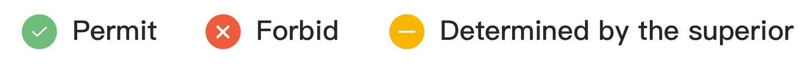
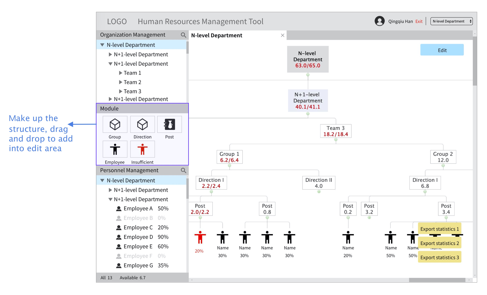
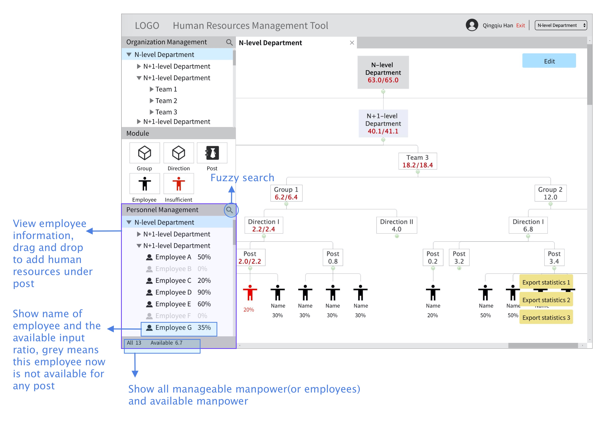
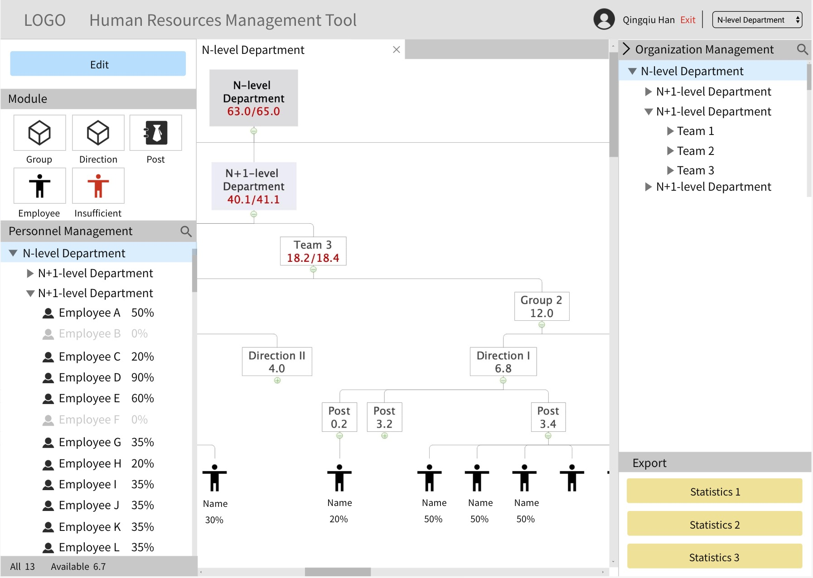

----This page contains many images, please wait a few seconds for loading----
Disclaimer
This project was produced during my internship in Wangsu Science & Technology Co.,Ltd. Xiamen Branch. In order to strictly abide by the confidentiality agreement, commercially classified information is included at minimal level. All of the information on this page has been reviewed by the Wangsu Tech Co.,Ltd. Xiamen Branch and does not involve any company confidential information. They have agreed that this project could be displayed to the public.
Introduction
Human Resources (HR) Management Tool
- This tool is mainly used to manage the company's HR and show the current distribution of HR in a more intuitive way. It can also help analysis of HR;
- This tool has been widely accepted and used in lots of startups and midsize enterprises in China.
User Demographics
- The target market includes chief managers, assistant managers and team/groups leaders from each department. Their different clearance and rights are visualized using our auxiliary software, as shown below.

Demands Depicted by Target Users
- To view and edit the structure of the organization (departments, teams, etc.)
- To manage the allocation and availability of HR
- To collectively visualize information on unfulfilled task need, hypomotivated employees and other statistics
- To know real-time availability of manpower
Framework

Prototype 1.0

Functions
1. Top

- For users who are responsible for different departments at the same time, this tool should provide an entrance to let users switch managed organizations.
2. Edit Area

edit-button.gif
- Because statistics are associated with the content of edit area, users could not use three export buttons when editing
3. Organization Management

search.gif
switch.gif
4. Module
5. Personnel Management
Feedback
After I had finished my internship in this company, I wanted to know whether this tool work effectively and I asked my colleagues and customers for users' feedback. Many users say this tool makes managing HR easier and more convenient!
Problems
- Navigation bar and personnel individual management section are too small to operate. Especially for organizations with more than 25 employees;
- Edit button and three export buttons obstruct some part of edit area. It is a little trouble;
Prototype v2.0 (Personal Suggestions)
New Feature
- Put edit button to the left side, expand Personnel Management area, and they and Module make up the left area. They would be used when user editing;
- Put Organization Management and three export buttons to the right side. They make up the right area and they are all associated with the content of edit area. Besides, Organization Management become closer to the combo box (used to switch managed organization);
- Users could fold and unfold the right area. There would be a bigger edit area;
- When editing, the save button would appear on the right, the cancel button would appear on the left, adjacent to the editing canvas. It would be more convenient to quick-save;